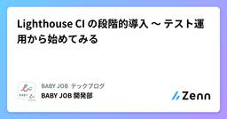
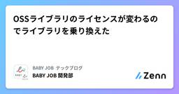
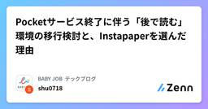
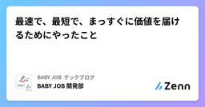
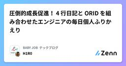
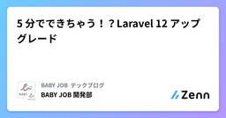

BABY JOB テックブログのフィード
https://zenn.dev/p/babyjob
私たち BABY JOB は、子育てを取り巻く社会のあり方を変え、「すべての人が子育てを楽しいと思える社会」の実現を目指すスタートアップ企業です。圧倒的なぬくもりと当事者意識をもって、子どもと向き合う時間、そして心のゆとりが生まれるサービスを創出します。https://baby-
フィード

Lighthouse CI の段階的導入 〜 テスト運用から始めてみる
BABY JOB テックブログのフィード
はじめにこの記事は以下のような方に読まれることを想定しています。Webアプリケーションのパフォーマンス改善に関心がある方手動での Lighthouse を利用した計測から、より継続的・体系的な計測へ移行を検討している方CI/CDパイプラインに本格導入する前の段階にフォーカスして、「どのような工夫で導入ハードルを下げたのか」「実際にテストしてどう変わったのか」など実体験に基づく内容を共有したいと思います。 この記事でやらないことLighthouse CI の基本的なセットアップ手順の解説 導入のきっかけ私たちの開発している、キャッシュレス決済サービス「誰で...
4時間前

OSSライブラリのライセンスが変わるのでライブラリを乗り換えた
BABY JOB テックブログのフィード
はじめにこんにちは！BABY JOB 開発部です！この記事では、「誰でも決済」で利用していたOSSライブラリのライセンスが変更になったため、別のOSSライブラリへと乗り換えたときのことをご紹介したいと思います。 ライセンスが変わったOSSライブラリユーザーエージェント（User-Agent）文字列を解析し、ユーザーが利用しているブラウザ、OS、デバイスの種類といった情報を特定するためのJavaScriptライブラリである、UAParser.jsを利用していました。こちらのライブラリがv2系からライセンスが変更になりました。 UAParser.js をv2系にバージョン...
2日前

Pocketサービス終了に伴う「後で読む」環境の移行検討と、Instapaperを選んだ理由 1
1
BABY JOB テックブログのフィード
はじめに長年利用してきた「後で読む」サービスであるPocketのサービス終了が発表されました。日常的に情報収集や記事のストックに活用していたため、代替となるサービスを探す必要が出てきました。この記事では、Pocketからの移行を検討されている方に向けて、私がいくつかのサービスを検討し、その中から最終的にInstapaperを選択した経緯と理由についてまとめます。同じような状況の方の参考になれば幸いです。 移行先の候補Pocketの代替となる「後で読む」サービスはいくつか存在します。私も本格的に移行先を探すにあたり、様々なサービスをリストアップしてみました。以下に主要な...
3日前

最速で、最短で、まっすぐに価値を届けるためにやったこと
BABY JOB テックブログのフィード
はじめにこんにちは！BABY JOB 開発部 ほりです。みなさんの開発組織では何を大切にしていますか？私の所属しているチームは今デリバリーの速度に重きを置いて開発を進めています。私たちのプロダクトは今転機を迎えており、これから先もスケールしていくために進むべき道を模索している状況です。そのためにできるだけ多くの施策を打ち、仮説検証を回していくことを目指しています。 どうすれば素早いリリースができるのかこれには無数のアプローチが存在すると思いますが、そもそもなぜ私たちは素早いリリースがしたいのか？それは素早く「仮説検証を回していく」ためです。そこに立ち返ると素早いリリースの...
4日前

圧倒的成長促進！ 4 行日記と ORID を組み合わせたエンジニアの毎日個人ふりかえり 1
BABY JOB テックブログのフィード
はじめに昨日何をして、何を学びましたか？この質問に答えることが難しければ、成長する機会を逃しているかもしれません。エンジニアとして更に成長するために、毎日個人ふりかえりをしてみませんか？ なぜふりかえるのか？毎日個人ふりかえりをする大きな理由は、先述した通りエンジニアとして成長できるためです。エンジニアの成長速度は鈍化していきます。新卒の頃は新しいことだらけで、与えられた課題をこなすだけで自然と成長できますが、仕事に慣れてくると、どこか似たような仕事をするようになっていくため、成長速度が鈍化するのだと思います。しかし、経験学習モデル[1]のサイクルを回す ことで似た...
5日前

5 分でできちゃう！？Laravel 12 アップグレード
BABY JOB テックブログのフィード
はじめにLaravel 公式ドキュメントによると、Laravel 11 → 12 へのアップグレードはわずか 5 分で完了するらしいです。 Upgrading To 12.0 From 11.xEstimated Upgrade Time: 5 Minuteshttps://laravel.com/docs/12.x/upgrade#upgrade-12.0真相を探るべく、弊社サービス「えんさがそっ♪」で実際にアップグレードしてみました。今回はチームの方針もあり、メンバー 4 人総出で取り組みました！ 作業手順アップグレード作業仕様変更による影響調査動作...
6日前

JJUG CCC 2025 Spring 参加レポート
BABY JOB テックブログのフィード
はじめにこんにちは！BABY JOB 開発部です！この記事は 2025/6/7 に開催された JJUG CCC 2025 Spring へ参加してきたメンバーによる参加レポートです！この記事を書いたメンバー：mackey0225、いずみはら、yamade、tani33、chayaka JJUG CCC とは以下公式サイトより引用「JJUG CCC は日本最大のJavaコミュニティイベントです。Java 関連の技術や事例に関する良質なセッションが行われ、また異なる分野で活躍するJava技術者が一堂に会する場ともなっています。」（引用元：https://ccc202...
10日前
AI コードレビュープロセス with PR-Agent
BABY JOB テックブログのフィード
はじめにこんにちは！BABY JOB 開発部です！以前の記事にて、AI コードレビューツール「PR-Agent（Qodo Merge）[1]」の導入背景と選定理由についてご紹介しました。https://zenn.dev/babyjob/articles/introduce-qodo-merge今回はその続編として、導入後の私たちのレビュープロセスについてご紹介します。 コードレビュープロセスおおまかには「実装完了 → AI レビュー → 指摘対応 → 人間レビュー」という流れにしています。このプロセスの大きな特徴は、AI レビューの実行タイミングを、自前で用意した専用...
14日前
PHPUnitからPestPHPへ：テストをもっと軽快に！
BABY JOB テックブログのフィード
はじめにPHPUnit を使ってテストを書いていると、その記述量や実行時間に頭を悩ませることはありませんか？もっと軽快に、そして読みやすくテストを書きたい――そんな願いを叶えてくれるかもしれないと思い、「PestPHP」に触れてみました。https://pestphp.com/PestPHP は「読みやすく理解しやすい」ことを掲げ、既存の PHPUnit を拡張する形で機能を提供しています。そのため、既存のテスト資産を活かしつつ、段階的に導入できるのも魅力です。今回は、PestPHP の導入から基本的な使い方について説明し、その軽快さを体感してみましょう。 環境構築...
1ヶ月前
TSKaigi 2025 参加レポート
BABY JOB テックブログのフィード
はじめにこの記事は 2025/5/23 ~ 2025/5/24 に開催された TSKaigi 2025 の参加レポートとなります。なお、筆者は Day 1 のみ参加であったので、Day 2 に関しては未記載であることをご了承ください。金魚かわいい TSKaigi とはTSKaigi は日本最大級の TypeScript をテーマとした技術カンファレンスです。2024 年から開催され、今回で 2 回目の開催となります。また、昨年は TSKaigi Kansai 2024 と称して、地域型イベントも開催されています。公式サイト 各トークの感想 The New ...
1ヶ月前
AI コードアシスタントツール Continue を Amazon Bedrock で使う
BABY JOB テックブログのフィード
こんにちは！BABY JOB 開発部です！私たちは現在、AI コードアシスタント Continue を Amazon Bedrock のモデルで試験運用しています。この記事では、Continue の導入背景や実際に使用してみて分かったことについて、Bedrock での利用に焦点を当ててご紹介します。 背景弊社では AI ツール導入の第一歩として、AI コードレビューツールを試験導入しました。[1]AI からの指摘を取り込むことでコード品質が向上する場面もあった一方で、指摘が採用されないケースも少なくありませんでした。メンバーへヒアリングしてみた結果、「プルリクエス...
1ヶ月前
Scrum Boot Camp OSAKA in April 2025 参加レポート
BABY JOB テックブログのフィード
はじめにこんにちは！BABY JOB 開発部です！この記事は、先日開催された「Scrum Boot Camp OSAKA in April 2025」へ参加してきた3名によるレポートです。 Scrum Boot Campとは？https://scrumdo-kansai.connpass.com/event/350060/スクラムを導入しようと考えている方のために、スクラムの基本やその背景にある考え方を、ワークショップを通して学べるイベントです。知識を重視した座学よりも、ワークショップ形式による気づきを重視した構成になっています。 スクラムを活用することで、どのように...
1ヶ月前
AI コードレビューツール Qodo Merge を試験導入してみた
BABY JOB テックブログのフィード
こんにちは！BABY JOB 開発部です！今回は AI コードレビューツール Qodo Merge を試験導入してみた話をご紹介します。 背景開発現場での生成 AI 活用が当たり前になってきました。弊社においても「日々の開発でどう活かせるか」を考える中で、まずはコードレビューの自動化に目を向けました。狙いは次の 3 点です。レビューイの学びを促進するレビュアーの負担を減らすプロダクトのコード品質を向上させるこれらを目的とし、AI コードレビューツールの検証を開始しました。 ツール選定候補に挙がったツールは以下の 3 つです。Qodo MergeCodeRa...
1ヶ月前
ふりかえりカンファレンス2025参加レポート
BABY JOB テックブログのフィード
はじめにこんにちは！BABY JOB株式会社 開発部です。4/12 (土) に開催されたふりかえりカンファレス 2025 へ弊社から 3 名が参加してきましたので、参加レポートです！ ふりかえりカンファレンス 2025 とはふりかえりカンファレンスは、ふりかえりを実践している方々、ふりかえりに興味がある方々に向け、マインドセットや新しい手法の提案などに加えて、ワークショップでふりかえりを体験できるカンファレンスです。イベントページよりふりかえりという括りのみで発表したり、エンジニア・スクラムマスター以外の役割の参加者も多い文字通り、ふりかえりのことについて発表した...
2ヶ月前
PHPerKaigi 2025 登壇&参加レポート
BABY JOB テックブログのフィード
はじめにこんにちは！ BABY JOB 開発部です！今回は、2025/03/21 〜 2025/03/23 で開催された「PHPerKaigi 2025」へ登壇・参加してきた 3 名のメンバーによるレポートです！ PHPerKaigi 2025 とは...以下 公式サイト より引用PHPerKaigi（ペチパーカイギ）は、PHPer、つまり、現在PHPを使用している方、過去にPHPを使用していた方、これからPHPを使いたいと思っている方、そしてPHPが大好きな方たちが、技術的なノウハウとPHP愛を共有するためのイベントです。 メンバーの感想 Y-Kanohい...
3ヶ月前
社内 LT 会を 1 年間続けられたので、ふりかえってみた
BABY JOB テックブログのフィード
こんにちはー！BABY JOB株式会社の @mackey0225 です！この記事では、BABY JOBのエンジニア組織で、2024 年の 2 月から社内 LT 会を開催し、無事に 1 年間続けられたので、そのことについてふりかえりました。具体的には、以下の内容についてまとめます！BABY JOB の社内 LT 会についてなぜ社内 LT 会を始めたのか？続けられるためにやったこと・考えたこと社内 LT 会を通じて得たもの・失ったものこの記事が、これから社内で勉強会や LT 会などの企画を始めようとしている方や、今やっているけど壁を感じている方にとって、有益になれば幸いで...
3ヶ月前
CloudShell 上の DuckDB に VPC フローログを取り込んでみた
BABY JOB テックブログのフィード
皆さんは、AWS の VPC フローログを取得していますでしょうか？おそらく、取っている方が多いのかなと思っています。以前、DuckDB に関する記事をいくつか書きました。その中で以下の記事では、AWS の CloudShell に DuckDB を入れて、S3 の ALB のログを SQL ライクに参照する話を書きました。https://zenn.dev/babyjob/articles/mackey0225-use-duckdb-in-cloudshell今回はその VPC フローログ版になります。 本題の前の簡単な説明 VPC フローログとはhttps://do...
3ヶ月前
AWSやAzure認定取得者がGoogle Cloud認定試験を受験する際に知っておきたいこと
BABY JOB テックブログのフィード
はじめに先日、はじめて Google Cloud 認定試験（Associate Cloud Engineer）を受験しました。これまで AWS や Azure の認定試験はいくつか受験したのですが、Google Cloud 認定は勝手が違うなと思うことがあったので紹介します。認定試験合格のための対策等については本記事では記述しないのでご容赦ください。また、私の受験時点(2025年3月)での情報であるという点もご留意ください。 試験予約以前 日本語の試験ガイドはどこにあるか？受験準備をする際には公式の試験ガイドをまず確認するかと思いますが、日本語の試験ガイドを探すのに...
3ヶ月前
UIデザイン講座2回目を開くことになった話（準備編）
BABY JOB テックブログのフィード
はじめにBABY JOB株式会社でUIデザインを担当しているelmoです。以前UIデザイン講座を開いた記事を3つほど書いたのですが、それの2回目を2025年4月に実施することになりました。（1回目は2023年10月に実施したので、1年5ヶ月ぶりですね！）UIデザイン講座１回目の記事「エンジニアさん向けにUIデザイン講座を開きたい！（準備編）」「エンジニアさん向けにUIデザイン講座を開きたい！（完結編）」「エンジニアさん向けにUIデザイン講座を開きたい！（成果物編）」こちらもチェックしていただけると嬉しいです！1回目は私の独断で「表層デザイン」を取り上げたのですが、今回...
3ヶ月前
CloudFormation の拡張機能利用スタックを更新しようとしたら、変更セットが作成できなくてハマった
BABY JOB テックブログのフィード
はじめにAWS CloudFormation でAWS::LanguageExtensionsを利用して言語機能を拡張すると、Fn::ForEachによる繰り返し処理等、素の CloudFormation だけでは実施できない処理が可能となります。AWS::LanguageExtensionsは便利な拡張ではありますが、Conditionでリソース作成の有無を切り替えようとした際に中々うまくいかなかったので、遭遇したエラーとその解決策について紹介します。 先に解決策AWS::LanguageExtensions 変換 - 考慮事項に記載の通り、AWS::LanguageE...
3ヶ月前